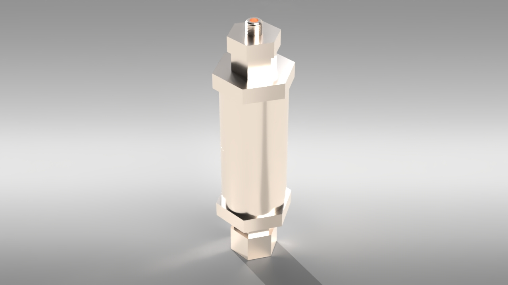

Overview
I designed a liquid sealant injector for bicycles intended to create a commercial product that could both pressurize
bike tires and insert liquid sealant. The system used a compressed-air reservoir to drive the sealant into the tire,
while custom ball check valves controlled one-way airflow through the system. This required the design to account for
internal pressure, sealing, airflow, sealant flow, assembly, and manufacturing constraints.
I developed three major design iterations in SolidWorks, progressing from an initial concept to a multi-part assembly
designed for easier manufacturing and assembly, and finally to a more integrated design focused on reducing weight,
part count, and unnecessary components. I used solid mechanics and thermodynamics calculations to size the pressure
vessel and valve components and compared several materials based on their mechanical properties and cost.
Pressure Vessel & Material Selection
One of the main design challenges was sizing the compressed-air reservoir to contain approximately 30 mL of air at
pressures up to 120 psi while minimizing unnecessary material.
I used thin-walled pressure-vessel equations to estimate the hoop and longitudinal stresses in the cylindrical
reservoir:
where P is the internal pressure, r is the reservoir radius, and t is the wall thickness.
Since the hoop stress is twice the longitudinal stress for the same geometry, it represented the more restrictive
loading condition so I used that as my basis. I used these calculations to estimate the required wall thickness and
compare the resulting stresses against candidate material yield strengths.
I also performed a thermodynamic check using the ideal gas equation,
to estimate the temperature associated with pressurization and make sure temperature would not become a limiting
material constraint.
I compared materials with readily available stock, including carbon steel, 4130 alloy steel, 304 and 316 stainless
steel, and 6061 and 2024 aluminum, based on their mechanical properties and material cost.
Custom Ball Check Valve

First design of internals with integrated 3D printed shaft
The injector used custom ball check valves to control one-way airflow through the pneumatic system. Each valve was
designed around a 4 mm diameter orifice and a 5 mm ball, with a compression spring holding the ball against the
valve seat until the pressure force was high enough to open it.
I initially sized the spring using the pressure force acting on the ball and Hooke’s law:
At the target cracking condition:
My first calculation resulted in approximately 2.09 mm of spring compression and led me to a spring with a rate near
0.487 lbf/in. During a later design review, I identified an error in the original calculation and changed to a
higher-rate spring with a smaller diameter that could fit between the 5 mm ball and 4 mm orifice without requiring
the separate support disk used in the earlier design.
The valve itself also went through several revisions. An early version used a separate disk beneath the ball to
support the spring. I later separated the ball from the disk and added a recessed feature to locate it while allowing
air to pass around the support. After further review, I eliminated the disk entirely by selecting a spring that could
support the ball directly.
Design Iterations
Version 1 — Initial Architecture
The first iteration established the basic architecture of the injector. It consisted primarily of the pressure reservoir with additional geometry for the spring-and-ball check-valve mechanisms. This version focused on establishing the required internal volume and packaging the major functional components.
Version 2 — Manufacturing & Assembly
For the second iteration, I separated the injector into multiple components and introduced threaded interfaces to
simplify manufacturing and assembly.
I considered using stock tube material for the pressure vessel with separately machined end caps, while the ball
check valves became their own threaded components that could screw into the tank. Breaking the injector into
individual parts made the internal components easier to install and allowed different manufacturing processes to be
considered for each component.
I initially used 3/8"-16 threads for the check-valve interfaces because they provided enough space for the 4 mm flow
passage while still leaving room for an O-ring. I also added hex geometry to several components so standard wrenches
could be used during assembly.
Version 3 — Part & Weight Reduction
For the third iteration, I focused on reducing part count and unnecessary material.
I combined the tank tube and one end into a single component so the pressure vessel could be assembled from two
primary tank parts instead of a tube with two separate end caps. I also shortened unnecessary threaded and hex
sections while keeping the components removable and accessible for assembly.
The later design used approximately 1 1/4"-12 threads between the main tank components, while the check-valve
interfaces continued to use 3/8"-16 threads.
O-Ring Sealing
As the threaded interfaces evolved, sealing became a separate design challenge. There was not enough space above and
below the main cylinder interface for the originally planned O-rings, so I moved the tank seal to the cylindrical side
surface.
Rather than estimating groove dimensions, I selected standard SAE AS568 O-rings from McMaster-Carr and designed the
glands using dimensions from the Parker O-Ring Handbook.
For the main tank interface, I used a dash-024 O-ring with a static radial gland. For the ball check-valve interfaces,
I used dash-014 O-rings with face-seal gland geometry.
This allowed the sealing features to be based on standard O-ring sizing and gland recommendations rather than arbitrary
CAD dimensions.
Pump & Tire Interfaces
The later design also incorporated interfaces for real bicycle and pump hardware.
I measured an existing Presta adapter and found approximately 0.25 in of 5/16"-32 threading, then incorporated a
matching female threaded interface into the injector. The opposite end included threaded geometry intended to connect
to an electric pump.
Designing around physical components rather than only nominal CAD dimensions helped define the final interface geometry,
although later prototype testing showed that these features still required additional tolerancing.
FDM Prototype & DFM
PETG 3D printed prototype used to evaluate assembly and interference fit
The final design was manufactured as a PETG FDM prototype to evaluate assembly and fit before moving toward the intended
production manufacturing methods.
The prototype exposed several issues that were not apparent from the CAD. Several threaded features required additional
clearance, some printed threads fractured at their bases, and the threaded pump interface did not fit the mating hardware
correctly. The tank O-ring also appeared too large for its interface, and the available BB-sized balls were slightly
undersized relative to the selected springs, although the valve still appeared to seal.
I completed my work on the project shortly after the prototype was produced, so I was not able to implement another
physical iteration. Based on the prototype results, the next revision would require more deliberate thread tolerancing,
stronger printed thread-root geometry, and additional verification of the O-ring and pump interfaces before pressure
testing.
What I Learned
This project changed how I approached CAD by showing me that geometry that works on a computer does not necessarily
manufacture, assemble, or operate as expected. Through each physical prototype, I learned to account for FDM tolerances,
support accessibility, component fits, friction, and assembly earlier in the design process rather than addressing them
after manufacturing.
It also gave me my first experience developing a mechanical system from observed behavior rather than an existing design,
requiring me to research mechanisms and develop my own solution for transferring motion from an enclosed motor to the
rotating external sections.